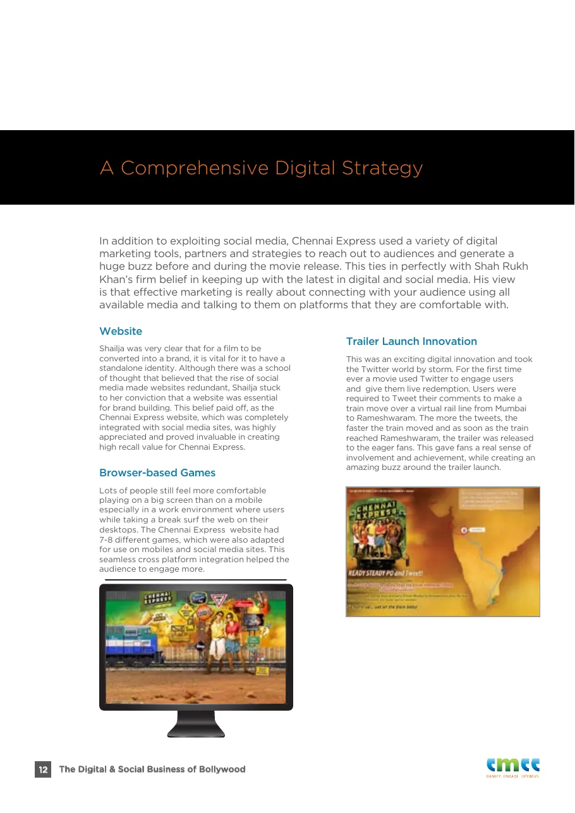
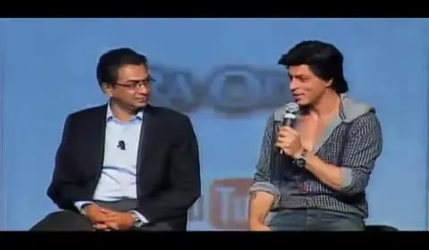
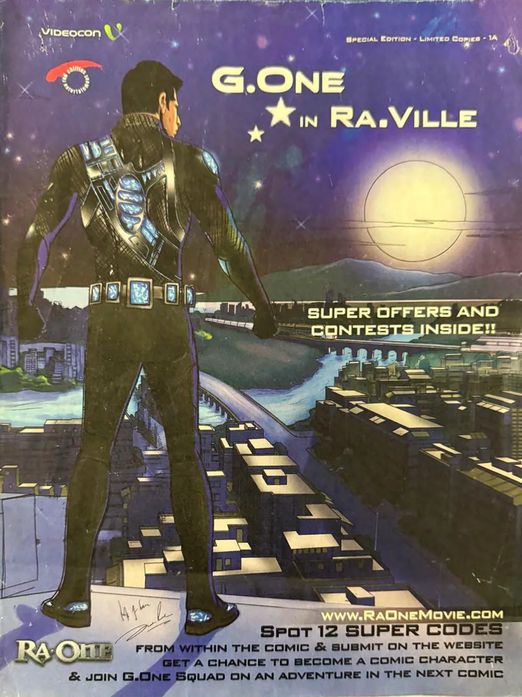

The Master Manuscript · October 2026
Asoka to Boo-Da SRK: The Man, The Myth, The King
This King is not renouncing. He is doubling down with the Royal Flush. Every version of the thesis, integrated into one book: a Prologue, ten Parts, 46 chapters, the Academic Addendum and the Final Frame. Facts are sourced, recollection is labelled, questions are left open on purpose.
 2 sections · 6 minOpeningStart this part →
2 sections · 6 minOpeningStart this part → 5 sections · 15 minPart IThe Origin of the King, 1965 to 1999Start this part →
5 sections · 15 minPart IThe Origin of the King, 1965 to 1999Start this part → Chapter 1Diaper Days: the boy in the wings, 1946 to 19753 min read
Chapter 1Diaper Days: the boy in the wings, 1946 to 19753 min read Chapter 2From School To Cool, 1970 to 19851 min read
Chapter 2From School To Cool, 1970 to 19851 min read Chapter 3Campus Cackle: the rehearsal room, 1985 to 19882 min read
Chapter 3Campus Cackle: the rehearsal room, 1985 to 19882 min read Chapter 4TV Cereal: six and a half hours, 1988 to 19913 min readChapter 5The Wall: the villain who became the lover, 1992 to 19995 min read
Chapter 4TV Cereal: six and a half hours, 1988 to 19913 min readChapter 5The Wall: the villain who became the lover, 1992 to 19995 min read 8 sections · 30 minPart IIThe First Digital Empire Starts With…, 2000 to 2013Start this part →Chapter 6Very Few Know: SRKWorld, 1999 to 20037 min read
8 sections · 30 minPart IIThe First Digital Empire Starts With…, 2000 to 2013Start this part →Chapter 6Very Few Know: SRKWorld, 1999 to 20037 min read Chapter 7Shah Rock Jaan and G.One: the dream that would not die2 min read
Chapter 7Shah Rock Jaan and G.One: the dream that would not die2 min read Chapter 8The KKR Years: the institution, 2004 to 20094 min readChapter 9My Name Is Khan, 2010: the star becomes the platform3 min readChapter 10Ra.One, 2011: building a digital kingdom3 min readChapter 11The Empire That Almost Was2 min read
Chapter 8The KKR Years: the institution, 2004 to 20094 min readChapter 9My Name Is Khan, 2010: the star becomes the platform3 min readChapter 10Ra.One, 2011: building a digital kingdom3 min readChapter 11The Empire That Almost Was2 min read
Chapter 12Chennai Express, 2013: the audience moves the train8 min readChapter 13Two Playbooks, One King1 min read5 sections · 11 minPart IIIThe Years of the Apparent Lull, 2014 to 2018Start this part → 4 sections · 5 minPart IVThe Ghost in the Present, 2019 to 2022Start this part →
4 sections · 5 minPart IVThe Ghost in the Present, 2019 to 2022Start this part →
4 sections · 4 minPart VThe Resurrection, 2023Start this part →6 sections · 6 minPart VIThe Kingdom by the Geek, 2024 to 2026Start this part → 4 sections · 7 minPart VIIThe Next FrontierStart this part →
4 sections · 7 minPart VIIThe Next FrontierStart this part → 7 sections · 7 minPart VIIIKING: The Royal FlushStart this part →
7 sections · 7 minPart VIIIKING: The Royal FlushStart this part →
3 sections · 3 minPart IXO TO X: My MathStart this part → 8 sections · 15 minPart XThe Academic AddendumStart this part →1 section · 1 minThe Final FrameStart this part →
8 sections · 15 minPart XThe Academic AddendumStart this part →1 section · 1 minThe Final FrameStart this part →